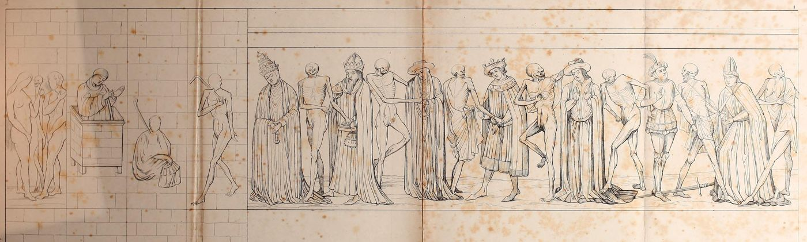
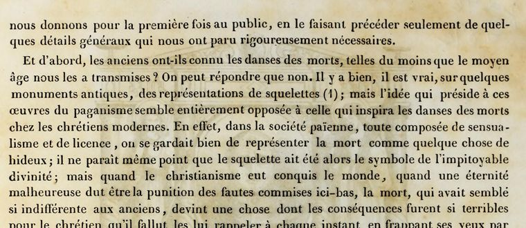

“Il fallut les lui rappeler à chaque instant” (p. 8)

French: Paris 1841, p. 8, scan. Highlighted: Lecky’s quotation.

First of all, did the ancients know the dances of death, at least as the Middle Ages handed them down to us? One may answer no. There are indeed, it is true, representations of skeletons on some ancient monuments; but the idea behind these works of paganism seems entirely opposed to the one that inspired the dances of death among modern Christians. In fact, in pagan society, given over entirely to sensuality and licence, people took good care not to represent death as anything hideous; it does not even appear that the skeleton was then the symbol of the pitiless divinity; but when Christianity had conquered the world, when an eternity of misery had to be the punishment of faults committed here below, death, which had seemed so indifferent to the ancients, became a thing whose consequences were so terrible for the Christian that he had to be reminded of them at every moment by striking his eyes with funeral images.
Later, in the Middle Ages, when great public calamities fell upon the nations, the feeling of death grew more intense. People did not confine themselves to representing the terrible goddess alone and for each person: they painted her, they sculpted her for all and with all her train; that is, they showed her attacking in turn the king, the pope, the emperor, carrying off in her fantastic round the merry minstrel as well as the monk piously shut up in his cell.
Original French
Et d’abord, les anciens ont-ils connu les danses des morts, telles du moins que le moyen âge nous les a transmises ? On peut répondre que non. Il y a bien, il est vrai, sur quelques monuments antiques, des représentations de squelettes ; mais l’idée qui préside à ces œuvres du paganisme semble entièrement opposée à celle qui inspira les danses des morts chez les chrétiens modernes. En effet, dans la société païenne, toute composée de sensualisme et de licence, on se gardait bien de représenter la mort comme quelque chose de hideux ; il ne paraît même point que le squelette ait été alors le symbole de l’impitoyable divinité ; mais quand le christianisme eut conquis le monde, quand une éternité malheureuse dut être la punition des fautes commises ici-bas, la mort, qui avait semblé si indifférente aux anciens, devint une chose dont les conséquences furent si terribles pour le chrétien qu’il fallut les lui rappeler à chaque instant en frappant ses yeux par des images funèbres.
Plus tard, au moyen âge, quand de grandes calamités publiques vinrent fondre sur les nations, le sentiment de la mort s’exalta. On ne se borna pas à représenter la terrible déesse seule et pour chacun : on la peignit, on la sculpta pour tous et avec tout son cortège ; c’est-à-dire qu’on la montra s’attaquant successivement au roi, au pape, à l’empereur, emportant dans sa ronde fantastique aussi bien le joyeux ménétrier que le moine saintement enfermé dans sa cellule.
Lecky’s transcription has “les lui rapporter” for Jubinal’s “les lui rappeler” (“remind him of them”), and “ses yeux des images” for “ses yeux par des images”.
Backlinks
Every place in Rationalism in Europe that links to this page (generated automatically when the site is built).